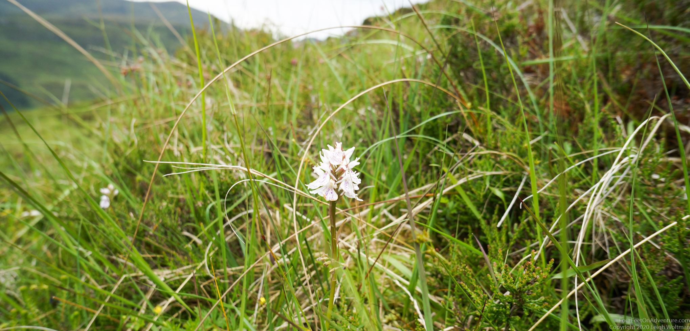
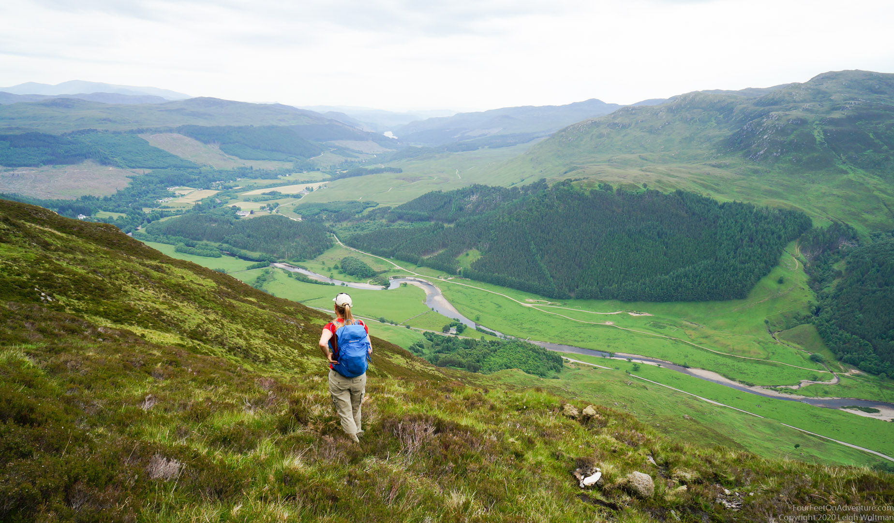
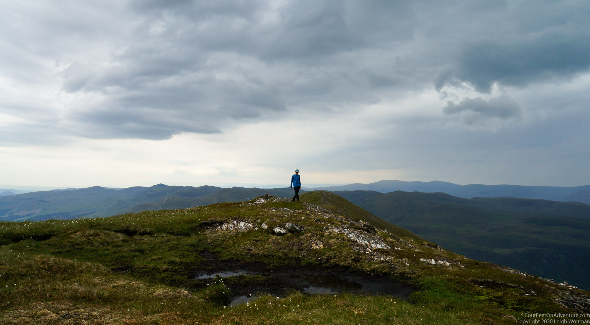
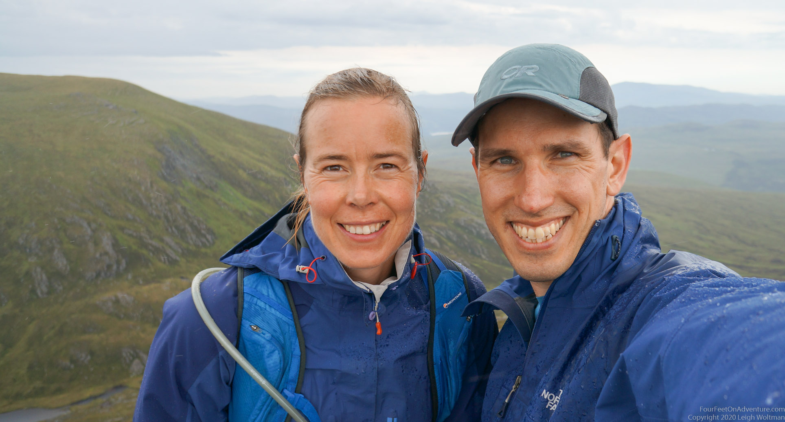
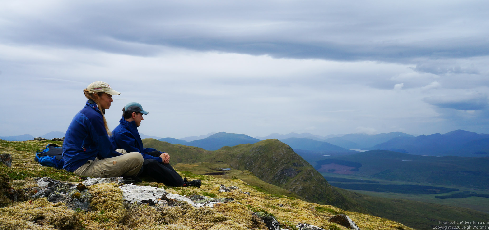
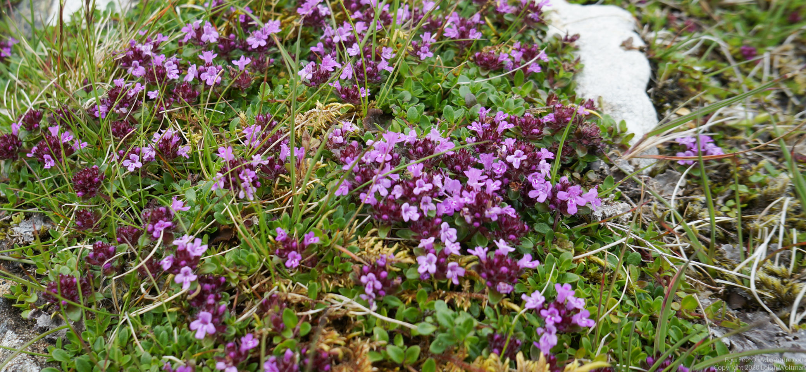

Another trip to an unpronounceable hill. But never mind the name, it was full of pretty orchids!

We chose our way up through the bushes, with good views to the valley.

A typical day in Scotland, even though the sky doesn’t look too friendly, it actually wasn’t that cold on top.

We also don’t mind a little bit of refreshing rain.

Always when we see a little lochain, like the lake here, I feel like pitching my tent and staying.
Such a relaxing hike. We took a rest at the top of the hill. Luckily the previous rain was short and it had dried up already, so we could go for a little snooze in the soft moss. How peaceful it always is to be up in the hills.

More colours! I love this time of year when flowers are starting to bloom and colours are popping up everywhere.
